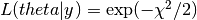
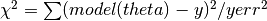

emcmass package¶
Submodules¶
emcmass.emcmass module¶
-
emcmass.emcmass.MCMC(variables, limits, obs, obs_err, model='mist', nwalkers=100, nsteps=1000, percentiles=[16, 50, 84], return_chain=False, **kwargs)¶ Main MCMC function
Parameters: - parameters (list) – list of model parameters to interpolate in between
- variables (list) – list of observable variables to be used in the likelihood function
- limits (list of tuples) – list of limits on the model parameters. Each limit is one tuple containing (min, max)
- obs (np.array) – array of the observed values for the variables
- obs_err (np.array) – array of the errors on the observations
- model (str) – name of the stellar evolution models
- nwalkers (int) – number of walkers to use (at least twice as many as parameters)
- nsteps (int) – number of steps each walker will take
- percentiles (list) – the percentiles used to calculate the final values and uncertainties used as argument for np.percentile()
- return_chain (bool) – if true, the whole Markov chain is returned, otherwise on the values and errors (lower and upper) for the parameters
Returns: array (#parameters, #walkers * #steps) – all samples taken by each walker.
-
emcmass.emcmass.lnlike(theta, y, yerr, **kwargs)¶ log likelihood function
There is no need to check for limits in the likelihood function because this is already done in the prior function
This function uses
models.interpolate()to obtain the synthetic values for the given parameters theta. The logarithm of the likelihood is calculated as:
with:

Parameters: - theta (list) – list of model parameters (normaly mass, fe/h and age)
- y (array) – 1D array of observables
- yerr (array) – 1D array containing errors on every observable
Returns: logarithm of the likelihood of the model parameters (theta) given the observables (y) with errors (yerr)
Return type: float
-
emcmass.emcmass.lnprior(theta, limits, **kwargs)¶ Simple uniform (flat) prior on all three parameters if they are within their range
if all parameters are within the provided limits, the the returned log probability is 0, otherwise it is -inf.
Parameters: - theta (list) – list of model parameters
- limits (list of tuples) – limits on the model parameters
Returns: logarithm of the probability of the parameters (theta) given the model limits
Return type: float
-
emcmass.emcmass.lnprob(theta, y, yerr, limits, **kwargs)¶ full log probability function combining the prior and the likelihood
will return -inf if any of
lnprior()orlnlikelyhood()is infite, otherwise it will return the sum of both functions.Parameters: - theta (list) – list of model parameters (normaly mass, fe/h and age)
- y (array) – 1D array of observables
- yerr (array) – 1D array containing errors on every observable
- limits (list of tuples) – limits on the model parameters
Returns: the sum of the log prior and log likelihood
Return type: float
emcmass.interpol module¶
-
emcmass.interpol.create_pixeltypegrid(grid_pars, grid_data)¶ Creates pixelgrid and arrays of axis values.
- Starting from:
- grid_pars: 2D numpy array, 1 column per parameter, unlimited number of cols
- grid_data: 2D numpy array, 1 column per variable, data corresponding to the rows in grid_pars
example: interpolation in a 3D grid containing stellar evolution models. Say we have as input parameters mass, age and metalicity, and want to obtain teff and logg as variables.
- grid_pars =
mass age Fe/H 1.0 1.0 -0.5 2.0 1.0 -0.5 1.0 2.0 -0.5 2.0 2.0 -0.5 1.0 1.0 0.0 2.0 1.0 0.0 … … … - grid_data =
teff logg 5000 4.45 6000 4.48 … …
The resulting grid will be rectangular and complete. This means that every combination of unique values in grid_pars should exist. If this is not the case, a +inf value will be inserted in grid_data at all locations that are missing!
Parameters: - grid_pars (array) – Npar x Ngrid array of parameters
- grid_data (array) – Ndata x Ngrid array of data
Returns: axis values and pixelgrid
Return type: array, array
-
emcmass.interpol.interpolate(p, axis_values, pixelgrid)¶ Interpolates in a grid prepared by create_pixeltypegrid().
p is an array of parameter arrays each collumn contains the value for the corresponding parameter in grid_pars each row contains a set of model parameters for wich the interpolated values in grid_data are requested.
example: continue with stellar evolution models used in create_pixeltypegrid
- p =
mass age Fe/H 1.21 1.3 0.24 1.57 2.4 -0.15 … … …
>>> p = np.array([[1.21, 1.3, 0.24], [1.57, 2.4, -0.15]]) >>> interpolate(p, axis_values, pixelgrid) >>> some output
Parameters: - p (array) – Npar x Ninterpolate array containing the points which to interpolate in axis_values
- axis_values (array) – output from create_pixeltypegrid
- pixelgrid (array) – output from create_pixeltypegrid
Returns: Ndata x Ninterpolate array containing the interpolated values in pixelgrid
Return type: array
emcmass.models module¶
-
emcmass.models.get_files(evolution_model)¶ Returns list of files belonging to the requested evolution models together with a list of the metalicity of each file
- curently recognized models are:
- mist: MESA Isochrones & Stellar tracks with v/vcrit = 0.0
- yapsi: Yale Potsdam Stellar Isochrones
-
emcmass.models.get_isochrone(feh, age, **kwargs)¶ returns an isochrone for the requested metalicity and age The mass points of the track are the gridpoints included in the evolution grid
-
emcmass.models.get_track(mass, feh, **kwargs)¶ Returns an evolution track for a given mass and metalicity. The age points of the track are the gridpoints included in the evolution grid
-
emcmass.models.interpolate(mass, feh, age, **kwargs)¶ Returns the requested values from the stellar evolution grids at the given values for the input parameters (mass, feh, age)
-
emcmass.models.prepare_grid(evolution_model='mist', variables=['log_L', 'log_Teff', 'log_g', 'M_H'], set_default=False, **kwargs)¶ Prepares the stellar evolution models by creating a pixelgrid to be used in interpolate This method will read the stellar evolution models from file, select only the columns you want to interpolate over (given in parameter_names), and will return axis_values, pixelgrid to be used in interpolate.
You can also provide limits on the size of the grid in mass, feh and age by setting the mass_lim, feh_lim and age_lim keywords